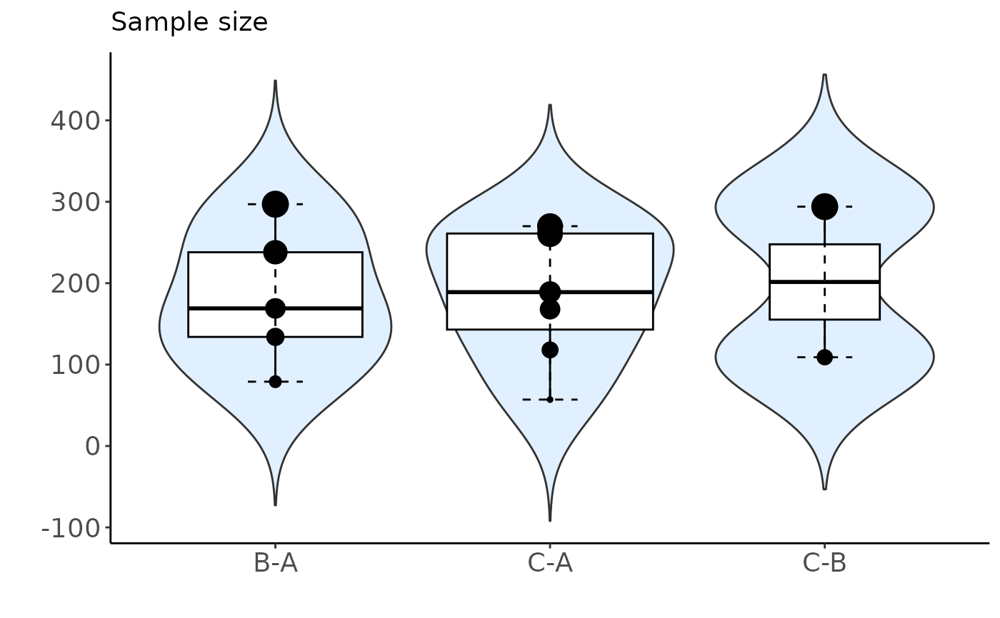
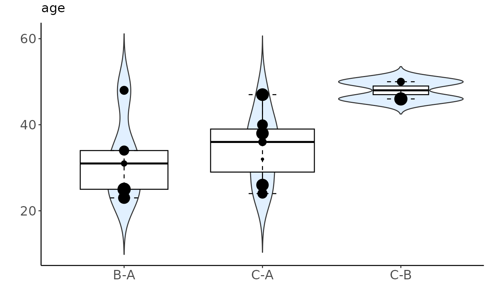
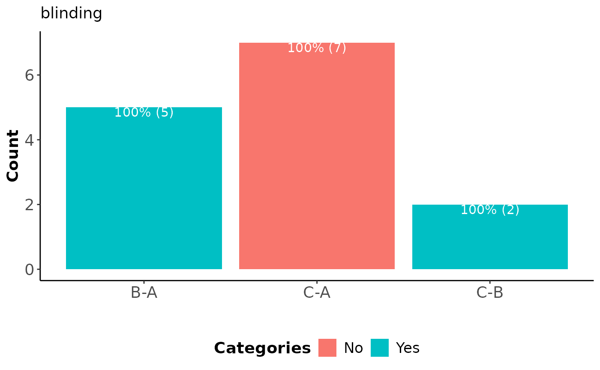

Visualising the distribution of characteristics (Comparisons' comparability for transitivity evaluation)
Source:R/distr.characteristics_function.R
distr_characteristics.Rddistr_characteristics uses violin and bar plots to visualise the
distribution of each characteristic in the dataset either per comparison
or cluster of comparisons.
Usage
distr_characteristics(
input,
drug_names,
rename_char = NULL,
cluster = NULL,
label_size = 4,
title_size = 14,
axis_title_size = 14,
axis_text_size = 14,
axis_x_text_angle = 0,
legend_text_size = 13
)Arguments
- input
A data-frame in the long arm-based format. Two-arm trials occupy one row in the data-frame. Multi-arm trials occupy as many rows as the number of possible comparisons among the interventions. The first three columns refer to the trial name, first and second arm of the comparison (their identifier number), respectively. The remaining columns refer to summary characteristics. See 'Details' for specifying the columns.
- drug_names
A vector of labels with the name of the interventions in the order they appear in the argument
input.- rename_char
A list of two elements: (i) a numeric vector with the position of the characteristics in
input, and (ii) a character vector with the names of the characteristics, as they are wished to appear in the title of the plots. This argument is optional, in case the user wants to control the appearance of the titles.- cluster
An object of S3 class
comp_clusteringthat has information on the cluster of each comparison. See 'Value' incomp_clustering. Ifclusteris not provided, the function presents the distribution of characteristics per comparison; otherwise per cluster. In the latter, the function prints a table with the comparisons and the corresponding cluster.- label_size
A positive integer for the font size of labels in the plots.
label_sizedetermines the size argument found in the geom's aesthetic properties in the R-package ggplot2).- title_size
A positive integer for the font size of legend title in the plots.
title_sizedetermines the title argument found in the theme's properties in the R-package ggplot2.- axis_title_size
A positive integer for the font size of axis title in the plots.
axis_title_sizedetermines the axis.title argument found in the theme's properties in the R-package ggplot2.- axis_text_size
A positive integer for the font size of axis text in the plots.
axis_text_sizedetermines the axis.text argument found in the theme's properties in the R-package ggplot2).- axis_x_text_angle
A positive integer for the angle of axis text in the plots.
axis_text_angledetermines the axis.text.x argument found in the theme's properties in the R-package ggplot2).- legend_text_size
A positive integer for the font size of legend text in the plots.
legend_text_sizedetermines the legend.text argument found in the theme's properties in the R-package ggplot2.
Value
distr_characteristics returns a list of plots using the proper plot
(violin or bar plot) for each characteristic. The size of the dots in the
violin plot (with amalgamated box plots and dots) are proportional to the
total sample size of the study: the large the sample size of the study, the
larger the size of the corresponding point.
Details
The correct type mode of columns in input must be ensured to use
the function distr_characteristics. The first three columns
referring to the trial name, first and second arm of the comparison,
respectively, must be character. The remaining columns referring
to the characteristics must be double or integer
depending on whether the corresponding characteristic refers to a
quantitative or qualitative variable. The type mode of each column is
assessed by distr_characteristics using the base function
typeof.
The interventions should be sorted in an ascending order of their
identifier number within the trials so that the first treatment column
(second column in input) is the control arm for every pairwise
comparison. This is important to ensure consistency in the order of
interventions within the comparisons obtained from the other related
functions.
Examples
# \donttest{
# Fictional dataset
set.seed(13022024)
data_set <- data.frame(Trial_name = as.character(1:(5 + 7 +2)),
arm1 = rep(c("1", "2"), c(5 + 7, 2)),
arm2 = rep(c("2", "3"), c(5, 7 + 2)),
sample = as.numeric(sample(50:300, 5 + 7 + 2)),
age = as.numeric(sample(18:50, 5 + 7 + 2)),
blinding = factor(rep(c("yes", "no", "yes"), c(5, 7, 2))))
distr_characteristics(input = data_set,
drug_names = c("A", "B", "C"))
#> - Dropped characteristics: none
#> $`Sample size`

#>
#> $age

#>
#> $blinding

#>
# }